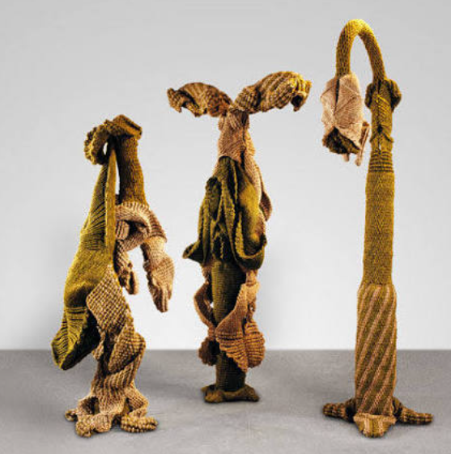
✧Descripition✧
Rudra, Devi, Purush Series (1980-82)
This image shows three monumental free-standing hemp sculptures. On the left is a folded, dark brown form like a crouching woman, in middle a T-shaped deity with outstretched arms, and on right a tall phallic form with a looped head. These belong to her early 1980s series named Rudra, Devi and Purush. Made from hand-dyed hemp ropes knotted by her assistant Budhiya in her tiny Nizamuddin studio, they are 7-8 feet tall. They evoke ancient Indian deities with explicit male and female genitalia, but not in a vulgar way. They look like forest gods emerging from nature, blending sexuality and spirituality.
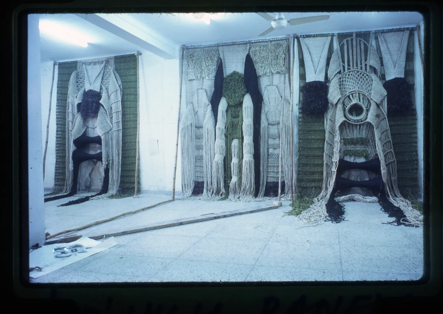
✧Descripition✧
Phenomenal Nature Installation at Met Breuer
This is an installation view of her retrospective "Phenomenal Nature" at Met Breuer, New York 2019. Four large hanging sculptures are seen suspended from ceiling like curtains. They are Van Raja, Yakshi, Devi and Rudra. Each is dyed in earthy maroon, black and beige and knotted to form cavities, folds and protuberances that look like limbs, breasts and genitals. She started as wall hangings in 1970s under K.G. Subramanyan, then made them free-standing to occupy space. The works are physical - her body, material and environment worked together. They demand to be walked around, not just looked at.
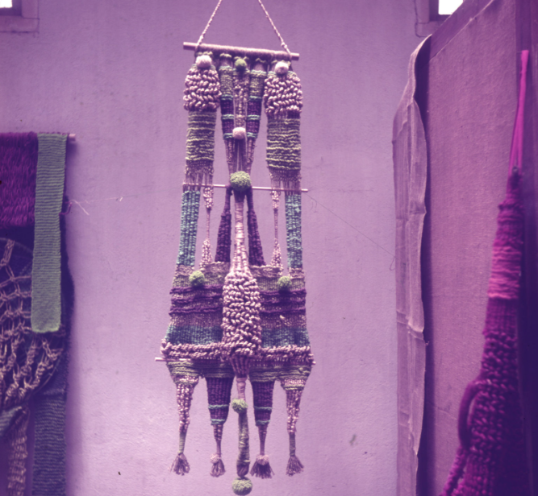
✧Descripition✧
Hanging Deity (1981-82)
This is a tall, hanging black and brown fiber sculpture known as 'Black Devi' or 'Devi (Goddess)'. It is narrow, 9 feet long, hanging from a triangular frame, with tassels at bottom. Made from dyed hemp in deep aubergine and black, it has a central hollow like a womb and two breast-like forms. It looks like a ritual costume or temple banner. Mukherjee was inspired by village textile arts and Indian temple sculpture. She never sketched, she worked by intuition, knotting directly. The work has a sweet smell of hemp even years after making and exudes powerful female energy.
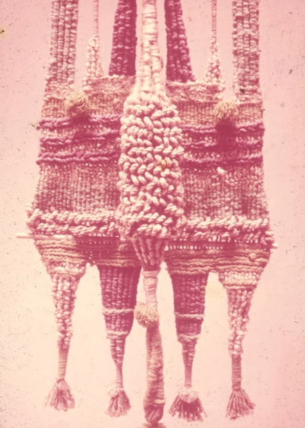
✧Descripition✧
Double Form (1984)
This is 'Yakshi' - Female Forest Deity, 1984, a wall-mounted diptych in rust red hemp. It shows two identical tall slender figures side by side with bulging bellies and long legs. The surface is heavily knotted to look like bark or reptile skin. Yakshis in Indian mythology are fertility goddesses protecting forests. Mukherjee's Yakshi has large hips, pointed breasts and a mask-like face. It is erotic but also maternal. The dye is natural, earthy red from organic pigments. It is about 8 feet tall and shows her technique of creating internal support through knotting without any steel armature.
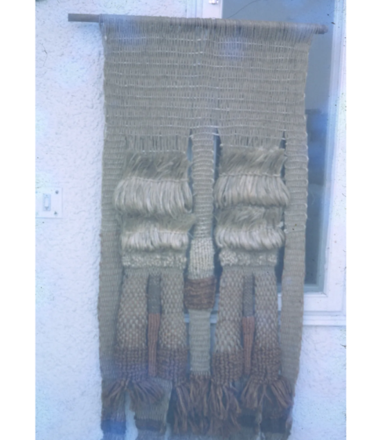
✧Descripition✧
Forest Garland (1990s)
This is a translucent, curtain-like fiber work titled 'Vanshringar' or 'Forest Adornment'. It hangs like a veil, with three vertical columns joined at top. Made in pale beige hemp, it has leaf motifs knotted into the fabric. It is lighter than her earlier dark works, from her 1990s phase when she moved towards more open, lacy structures. It looks like a sacred doorway or temple toran. The viewer must pass through its presence. Mukherjee said her idea of sacred was not in any religion but in a forest, church or mosque. This work embodies that secular sacredness.
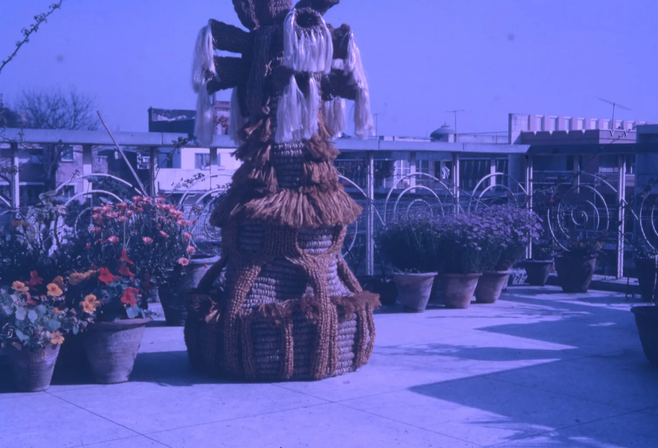
✧Descripition✧
Monumental Free-Standing Work (1991-94)
This is her most famous work 'Van Raja' - King of Forest, 1991-94, installed outdoors. It is a massive, dark brown, throne-like sculpture about 10 feet tall with multiple layers, ruffles and a crown-like top. It looks like a king made of dried leaves and bark. Made from hemp dyed in deep brown and maroon, it is completely free-standing, one of her first to stand without wall support. It was so large that the narrow door of her barsati had to be broken to take it out. It shows nature as ruler, powerful and erotic at once.
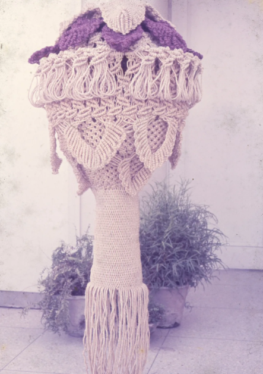
✧Descripition✧
Crown Form
This is a work from her 'Palm Scape' series, later translated into bronze also. It looks like the crown of a palm tree or a temple shikhara made in beige hemp. The top is flared like a flower opening, bottom is narrow with long tassels like roots. It is about 6 feet tall, hanging. The knotting mimics the fibrous trunk of palm. Mukherjee loved plants as metaphors - growth, unfolding, maturation like a sapling. This work is phallic and feminine at same time, with orifice in centre. It was made in her Baroda studio after she returned from UK.
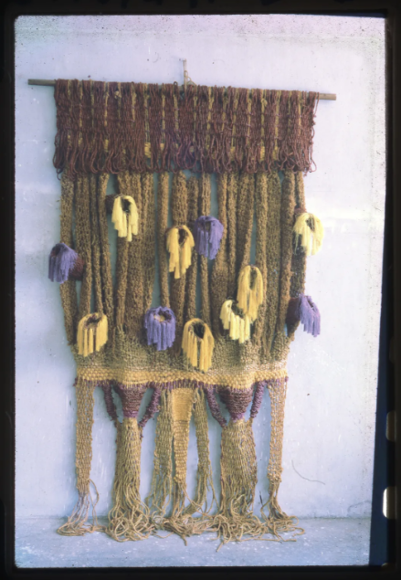
✧Descripition✧
Shakti
This is a wall hanging titled 'Shakti' or 'Devi' with long yellow tassels at bottom and a dark woven body on top. The top part has diamond-shaped holes like eyes, and bottom has thick twisted ropes like legs. It is made in black and ochre dyed hemp. It hangs flat against wall unlike her free-standing works. Early works were all wall hangings before she made them sculptural. This one looks like a tribal deity or a totem. The yellow tassels are dyed with natural turmeric colour. It shows her connection to Indian craft traditions.
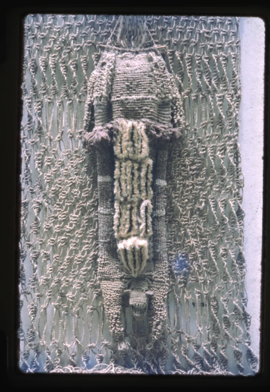
✧Descripition✧
Purush
This is 'Purush (Male Spirit)' in grey hemp, a tall totemic pillar with a central figure in high relief. The figure has folded hands, large phallus and crown. The background is heavily knotted like a stone temple wall. Made in 1980, it is one of her first gendered deities series. The male is shown not as muscular hero but as soft, folded, almost yogi-like. The hemp is undyed grey-beige, showing natural fiber colour. It is about 7 feet tall. This work was part of NGMA Delhi retrospective where its sweet hemp smell filled the hall.
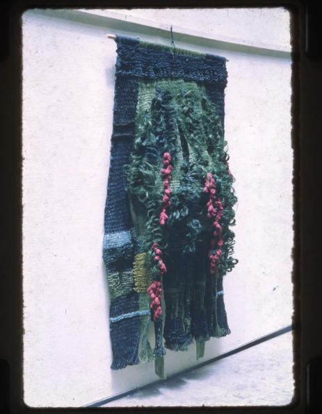
✧Descripition✧
Green Hanging
This is 'Aranyani - Goddess of Forests', 1996, a large green-black hanging with dense foliage knotting and pink flowers woven inside. Aranyani is a Vedic goddess who protects forests. The sculpture looks like a forest itself - leaves, vines, flowers all knotted together. It has a hidden face in centre. Made from hemp dyed in forest green and deep purple, it is about 8x5 feet. It shows her shift towards more floral, less figural work in 90s. She said her mythology is de-conventionalized and personal, inspired by museum objects and her own garden.
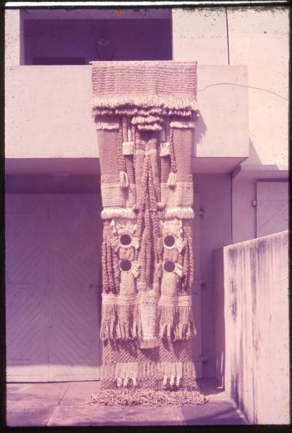
✧Descripition✧
Temple Pillar Form
This is a tall columnar sculpture resembling a temple pillar, made in beige hemp with two figures carved on sides. It is like a gateway pillar with bulbous forms and circular holes like eyes. It is installed in a white room, free-standing. This type of work references South Indian temple architecture which her father Benode Behari painted. The work is both architectural and bodily - pillar as body, body as pillar. It uses traditional macrame knots enlarged to monumental scale. It is 9 feet tall and shows her engineering skill without any internal steel support, only hemp tension.
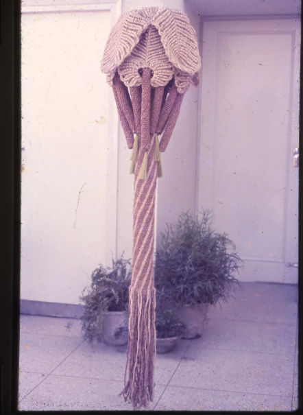
✧Descripition✧
Basanti (She of Spring)
This is 'Basanti - She of Spring', 1984, a tall pink-beige hanging with a pointed hood at top and twisted stem. It is 10 feet tall, narrow, with a single orifice at top like a flower stigma. Basanti represents spring, fertility and new life. The colour is light pink-beige, dyed with natural colours. It is phallic yet female, like a sprout emerging. Mukherjee made it during her most ambitious period in 1980s when she made sculptures larger than herself. It hangs from ceiling and touches ground, like a living plant. It is now in Met Museum collection.
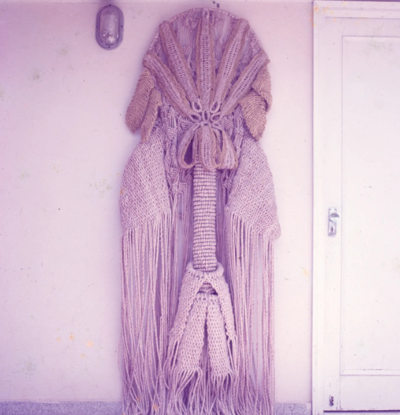
✧Descripition✧
Devi with Veil
This is another 'Devi' form, a tall draped figure in dusty rose hemp with a veil over head. The veil is made of loose knotted net falling like hair, covering the face. The body is columnar with hands folded. It looks like a bride or a goddess in purdah. Made in 1982, it is about 8 feet tall. The draping technique shows her mastery over soft material to create volume. She patted and caressed hemp to give it shape, like a mother shaping a child. The work is deeply spiritual, representing feminine mystery and power, not just body.
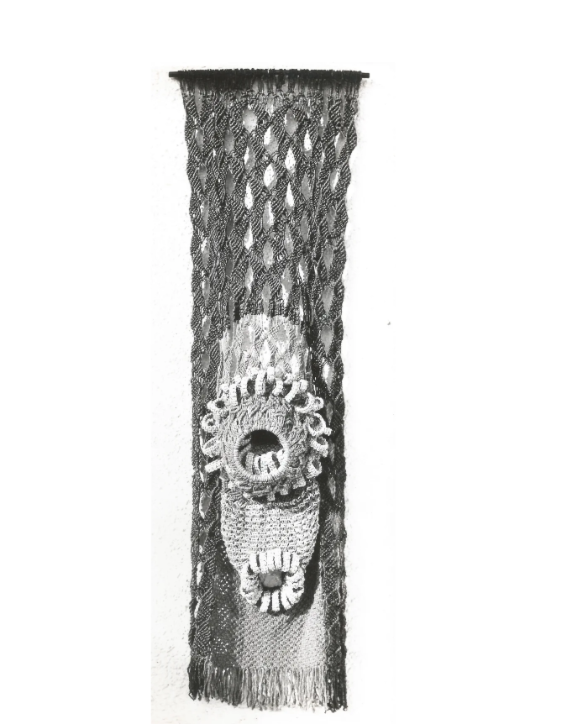
✧Descripition✧
Rudra Head
This is a tall black hanging from her Rudra series, with a fierce demon face at bottom and a netted shaft above. The face has bulging eyes, moustache and open mouth made from knotted hemp in grey and black. The top is like a honeycomb veil. Rudra is the deity of terror, an angry form of Shiva. This work is 8 feet tall, hanging. It shows her ability to create expression through texture alone - no paint, only knots. The mask looks like Theyyam or Kathakali masks which she collected. It is both frightening and beautiful, sacred and profane.
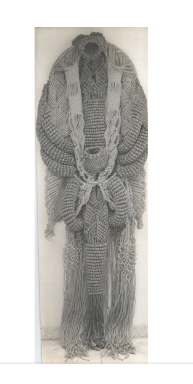
✧Descripition✧
Headless Cloak Deity
This is a headless cloak-like sculpture in beige hemp, shaped like a lingam or a long robe without head. It has a central vertical opening like a zipper and fluffy white border. It stands on floor, about 7 feet tall. The form is androgynous - both male lingam and female cloak. Mukherjee often made headless figures to avoid portraiture, focusing on body as landscape. The material is thick, soft, inviting touch. This work is from late 1980s, transition between deity series and palm series. It shows her idea of body as vessel, container of life force.
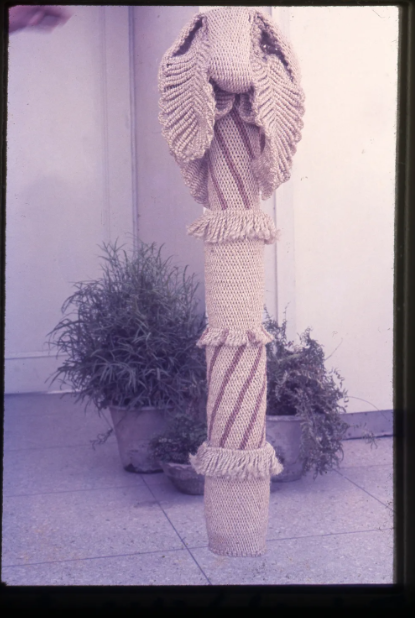
✧Descripition✧
Winged Deity
This is a winged form with two large wings on top of a twisted pedestal, like Garuda or an angel. Made in light grey hemp with striped pedestal, it is about 9 feet tall, free-standing outdoors with plants around. The wings are spread wide like a bird protecting. This is from early 1990s when she started making more bird and animal forms - Pakshi, Mayur etc. The wings are made by knotting hemp into feather patterns. It is both bird and deity, animal and human. It shows her ecological vision where human and animal realms merge
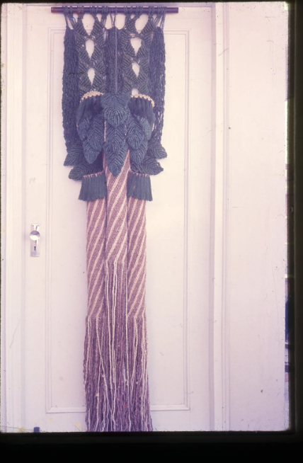
✧Descripition✧
Tasselled Pillar
This is a dark blue-black hanging with white diamond patterns on top and long twisted ropes below like a maypole. It is a totemic pillar, 8 feet tall, hanging from ceiling. The top is like a cap with geometric holes, bottom is like many legs. It looks like a tribal totem from Bastar. Made in indigo-dyed hemp, it shows her experimentation with deep chemical dyes. The work is called 'Cluster' or 'Totem' series. It has no clear face but many eyes and orifices, creating feeling of being watched. It is powerful and uncanny, typical of her style.
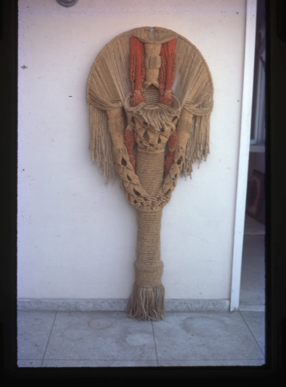
✧Descripition✧
Seed Form Hanging
This is a brown, pod-like hanging that looks like a giant seed or dried leaf, curled and hanging from wall. Made in rust brown hemp with darker edges, it is about 5 feet long, narrow at top and bulging at bottom like a womb. It is a seed form representing potential life. Mukherjee made many such pod forms in late 90s, moving from deity to pure plant forms. The surface is rough like bark, with a central slit like a vagina. It shows her central theme - eroticism as fertility, sexuality as creative force of nature. It is soft yet monumental.
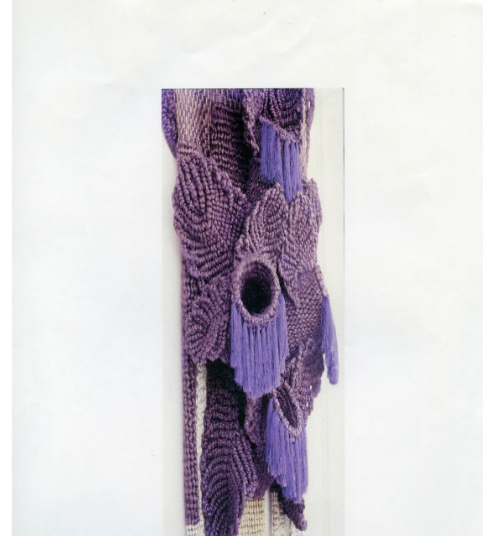
✧Descripition✧
Womb Form with Hole
This is a lavender-grey hanging with a large central black hole like an orifice or womb, surrounded by ruffled leaf-like flaps. It is about 6 feet tall, hanging on white wall. The hole is deep and dark, inviting and fearful. This work is from her 'Pushp (Flower)' series where flower is seen as female genitalia, like Georgia O'Keeffe. It is many times larger than life-size, making female sexuality powerful not hidden. The ruffles around hole look like petals or labia. It is made from hand-dyed hemp in muted lavender, achieved through complex dyeing process.
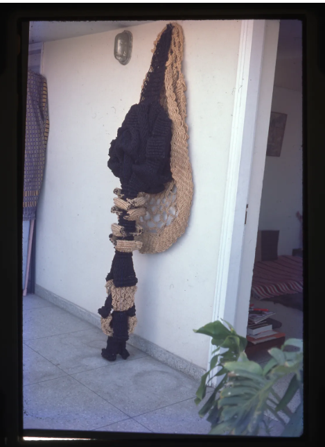
✧Descripition✧
Nag Devta Form
This is a dark, spike-like hanging with a beige root-like extension on wall, looking like a snake deity or Nag. The main body is black hemp, heavily knotted, about 7 feet long, with small stacked forms like vertebrae. The beige part on wall is like a hood. It hangs vertically like a stalactite. This is from her late fiber works before she moved to bronze in 2000s due to health. It shows her fascination with snakes, peacocks and reptiles as sacred animals. The work is both erotic and dangerous, like nature itself, and retains sweet hemp smell even after decades.